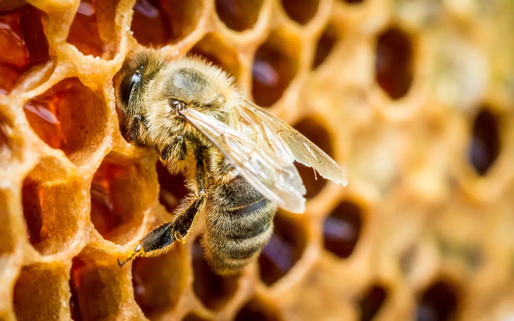

Mel das abelhas

O processo do Mel começa com a recepção das melgueiras com favos, seguido da retirada dos opérculos, ou desoperculação, na mesa desoperculadora. A extração é feita por centrifugação em um equipamento chamado centrífuga.


fortalecer nosso sistema imunológico, colaborar com a boa digestão, e até mesmo combater a prisão de ventre. Mas seus benefícios não param por aí: o mel é anti-séptico, diurético, antioxidante, calmante, e expectorante.